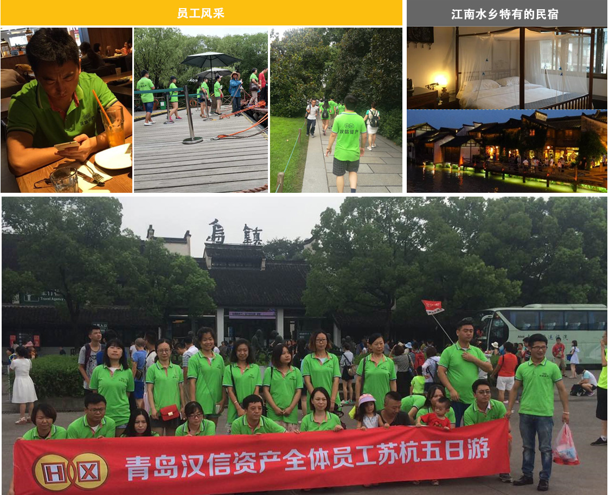

一提起苏杭就有“上有天堂，下有苏杭”的美誉。这次汉信资产管理有限公司组织全体员工苏杭游，一起来领略江南风采。
周五晚上七点出发，坐了一夜的车，大家都有点疲惫，但是一下车，呼吸着清晨的新鲜空气，大家就都精神抖擞了，嫩绿的工服自带清新属性。
首先去的是西溪湿地，这里是电影非诚勿扰的拍摄地，很多地方还保留着电影拍摄时候的印记。电影中的画面静谧又美好，真正的身处其中，这种灵动精致的感觉比电影里更甚。
接下来去的西湖，流传千古的白娘子传说，让西湖闻名于世的除了它的自然美景，还有动人心弦的爱情传说和人文情怀。G20在杭州举办期间，西湖上进行的美轮美奂的表演更让西湖多了几分现代感。 白蛇传不但让西湖闻名世界，也是断桥、雷峰塔、灵隐寺的一张名片。
择一城，选一民宿而居，不失为认识一个城市的一种方式。和当地人住一起，体验当地最朴实的风俗，让这次旅行更接地气。
第二天大家早起游览西塘景区，欣赏江南最美丽水乡。
小桥流水人家，给太多人心里镌刻上了一个江南梦想。
小桥上撑着油纸伞的长发女子、流水上摇曳而过的小船只。
小桥流水人家，道尽了江南，却讲不尽江南。
倘若你来到西塘，江南的面纱便被一一揭下。
备受文艺青年欢迎的西塘同样充满文艺气息，在酒吧里静静的听抱着吉他的不知名歌手唱一首民谣，或许会触动你内心的柔软。
乌镇可以说是江南水乡的代表了，小桥流水，粉墙黛瓦，就像漫步在一幅画里。
夜色渐渐深沉，游人也开始陆续散去，就算是溪中的小舟也返航归去。在古镇，最吸引人的就是这个时候。四周开始变得安静，变得凄清。慢慢地，在石板街上踱着步，享受着这份宁静，避开那个喧哗的世界。
古镇的味道，可能就是那种迷路的感觉吧。走着走着，就不知到哪里了，又好像似曾相识，于是又不管不顾地继续走。哦，原来就到这里了。
最后一天来到苏州，首先是因一首诗而扬名天下的枫桥。诗人张继的羁旅诗《枫桥夜泊》给此地蒙上一层孤寂的色调，而现在众多的游客让这里不再寂寥。寒山寺因为一首枫桥夜泊而出名，枫桥夜泊又因为一首歌而更加出名。
游玩的间隙，也不忘清凉一把，夏日冰淇淋和卫龙更配哦~
最后是期待已久的苏州著名园林之一的定园。苏州定园，位于“吴中第一名胜”虎丘山南麓的茶花古村，占地一百多亩，其中有目前苏州最大的园中湖“塔影湖”26亩，亭台楼阁映画其中、曲廊流水浑然天成，古迹遗址、大小景点三十多处，既有苏州古典园林之精、又有江南水乡之秀。为丰富内容、增加游兴，园内还常年增设了一些富有江南特色的表演项目，是一处独具特色的江南传统园林。 苏州园林的艺术价值、人文情怀、自然景观经典到被多次写进教科书。亭台楼阁也确实非常精致。布局非常巧妙，一个角落就自成一景，小小的一个园林，走起来四通八达。又是运用了迷路的效果，使园林走起来觉得很大。
四天的行程很短，但每个人都觉得很充实，这是第一次公司的集体出行，下次的安排很快就会来的，毕竟旅游是汉信资产管理有限公司除了理财、贷款、外汇外的重要板块，近水楼台，福利必须有O(∩_∩)O~
